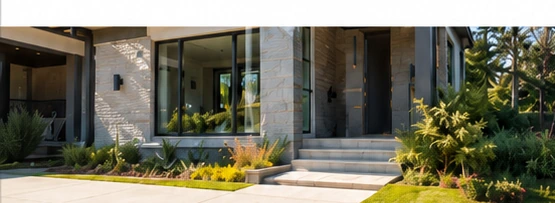

Young, local, and serious about the work.
MiNT is run by Marc, Nico, Tristan, and Tyler — four young entrepreneurs from South Surrey building a company around careful work, direct communication, and a service people are comfortable recommending.

A local service company, not a sales machine.
We started MiNT because window cleaning should be simple. Homeowners should know who is coming to the property, receive a clear price, and get careful work without a sales pitch at the door.
We are very young. We do not hide that. What matters is how we operate: answer quickly, arrive prepared, treat the property with respect, and stand behind every pane.
Close to home, on purpose.
MiNT is based in West Rosemary Heights and serves South Surrey and White Rock only. Keeping the route focused means faster quotes, easier scheduling, and a crew that actually knows the area.
Service area: West Rosemary Heights, Grandview Heights, Morgan Creek, Sunnyside, Ocean Park, Crescent Beach, White Rock, and surrounding South Surrey neighbourhoods.